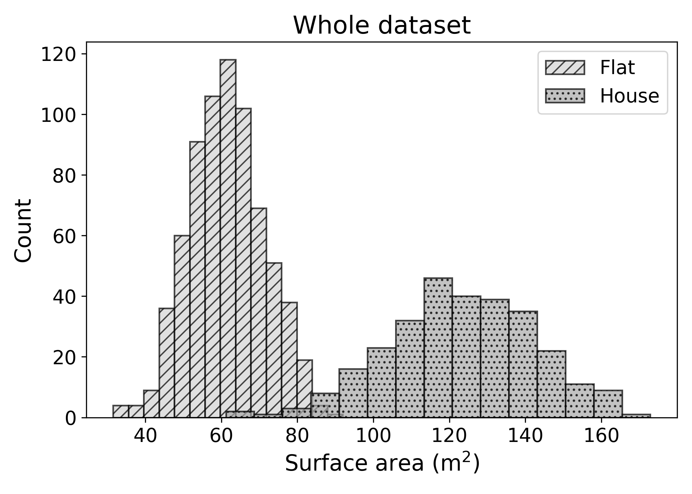
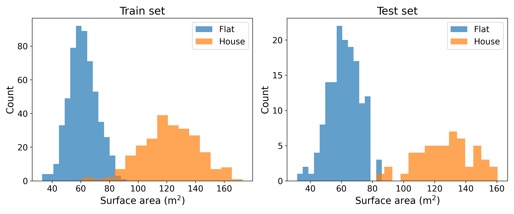

9 Model Evaluation
We have now built our first model, but how good is it really? To answer this question, let us go back to the main function of a Machine Learning model. It is to generate predictions for new observations that are as close to the truth as possible.
\[ \text{Input} \longrightarrow \text{Model} \longrightarrow \text{Prediction} \]
A good model makes predictions with low distance to the truth.
Taking this into account, how can we determine which model best performs its function?
There are two important elements to consider:
- New observations or unseen data
- Closeness to the truth
9.1 Unseen Data
Unseen data is, by definition, unseen. We cannot have access to it, as the moment we see it it becomes seen. Does that mean that we cannot evaluate a model on unseen data? Do we just wait for new observations to come?
9.1.1 Train-Test Split
One way to estimate a model’s performance on new data is to set aside a portion of the training data for testing. This will remain unseen to the model, and will not be used for training.
At the end of the training process, the trained model (like K-Nearest Neighbours) can be used to generate predictions on the test data. For this portion of unseen data, we have both model predictions and the true labels.
A good model will have predictions as close as possible to the true labels.
9.1.2 Representativeness
9.1.2.1 Simulating Prediction Conditions
We use a test set to estimate the performance of the model on unseen data.
For this estimation to make sense, the test set must be an accurate representation of what this unseen data will look like.
To make this more concrete, to evaluate a model trained to predict US property prices, it makes no sense to use Berlin flats as a test set. This is a bit of an extreme example, but illustrates the main idea.
In the training process, the model learns the relationship between input and output using observations on the training data.
\[ \text{Input} \longrightarrow \text{Model} \longrightarrow \text{Prediction} \]
If the test data is not representative of the unseen data the model will be used to generate predictions on, the model performance on this dataset will not be a good estimation of future performance.
9.1.2.2 Ensuring Representativeness
But how to make sure that the training and test sets are consistent? A single dataset can contain a lot of variations. In the property pricing example, there can be many types of properties with very different characteristics (e.g., surface area or number of rooms). Some of them are easier to price than others. How to make sure that the train and test set look alike?
Here, the law of large numbers comes to the rescue. The law of large numbers states that if we randomly sample a large enough number of observations from a population (here, training data), the randomly selected sample will be representative of the original population.
This is the statistical foundation of polling. Before elections, polling agencies randomly sample a large group of people to get a representative sample of the population.
Polling suffers from selection bias. Some people will not reply to a call from a polling agency. Some groups are more likely to reply than others, which introduces a bias in the composition of the sample. As an example, retired individuals spend more time at home close to their phones and are more likely to pick up the phone.
To make sure that they obtain representative samples, these agencies have to use some sophisticated mathematical tricks to ensure representativeness. With mixed success.
Going back to Machine Learning, by randomly selecting a large number of observations from the training set, you can ensure that the test set is a representative sample of the training data.
This can be visualised with a simple example. Let’s imagine that the training data contains both flats and single houses. These types of properties generally have different surface areas. The following chart shows the distribution of surface areas of both flats and houses for the entire data:

By randomly sampling 200 of the observations to create a test set, both the training and test sets have roughly similar distributions:

This is the law of large numbers in action! The larger the dataset and test set, the more similar the two distributions will look like.
9.1.3 Information leakage
Randomly selecting a portion of the training data sounds good. But can you see an issue with this method?
Let us go back to the example of property prices. Property prices evolve over time. If I randomly select 20% of the past transactions as test set, the training set will see prices from the entire period. For instance, if the training data contains transactions from January 2023 to January 2025, the randomly selected test set will also contain transactions from January 2023 to January 2025.
This will give the model the opportunity to learn the price trend of the whole period and then predict past prices. A model trained until January 2025 predicting the price of a property sold in 2024 will benefit from future knowledge.
The performance of the model in pricing past transactions will not be a good estimation of how the model will predict future property prices. How would you estimate the performance of a model in predicting future prices?
One way to do so is to use a time-based train/test split. If the training data contains data from Jan 2023 to Jan 2025, you could keep the last two months of the data (Dec 2024 and Jan 2025) as test set and use the rest for training.
This way, you estimate model performance on future price prediction. This is exactly how the model will be used once released. After training from Jan 2023 to Jan 2025, the model will be used to predict prices for Feb 2025 and beyond.

9.1.4 Wrapping up
Model evaluation is a critical aspect of Machine Learning practice. Before using model predictions in the real world, it is necessary to assess the model’s accuracy; the quality of the model’s predictions.
To do so, a part of the training data should be kept as test set. This test set should be representative of the training data. You should avoid information leakage by making sure that the model will not have access to future information when predicting on the test set.
9.2 Distance to the truth
Measuring the distance between the predictions and true labels depends on the type of problem. For classification tasks, predictions and ground truth will be class labels like “spam” or “malignant”. In regression problems, predictions and ground truth will be numbers.
As shown in a previous chapter, calculating distances is a fascinating topic, that will be further explored in the next two chapters.
9.3 Final Thoughts
To evaluate the performance of a prediction model, this chapter reviewed the following method:
- Set aside a fraction of the training dataset as test set
- Train the model on the train set, do not use the test set
- Use the trained model to generate predictions on the test set
- Compute the distance between the predictions and the labels of the test set
Exactly how to measure this distance will be the topic of the next two chapters.